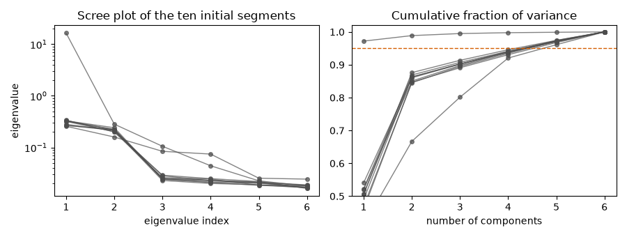
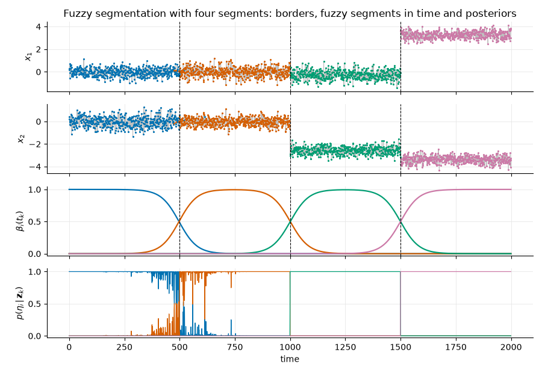
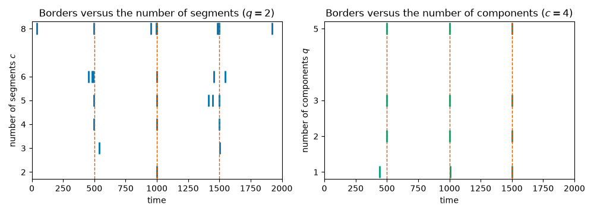
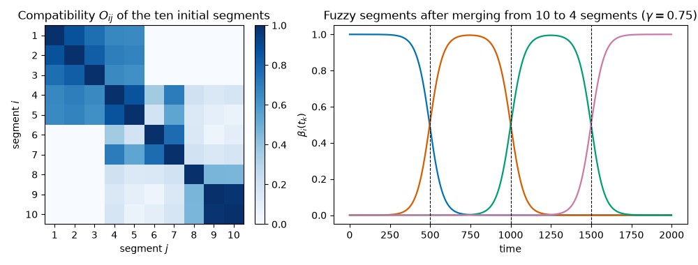

Note
Go to the end to download the full example code or to run this example in your browser via Binder.
Fuzzy segmentation of a multivariate time series#
A multivariate time series is segmented into internally homogeneous pieces. The segments are found by a modified Gath–Geva clustering whose prototype has two parts: a Gaussian membership function in time, which makes the clusters contiguous, and a local probabilistic PCA model of the observations, which measures the homogeneity of a segment. Because a PCA hyperplane reacts to changes in the mean, in the variance, and in the correlation structure, all three kinds of regime change are detected, including those that are invisible in any single variable.
The synthetic data reproduce the benchmark of Abonyi, Feil, Németh, and Árva (Fuzzy Sets and Systems, 2005): two hidden variables generate six observed ones through a mixing matrix. At the first change point the mixing matrix (the correlation structure) changes, at the second the mean of the hidden variables jumps, and at the third both change.
import matplotlib.pyplot as plt
import numpy as np
from fuzzyclust.plotting import PALETTE
from fuzzyclust.timeseries import FuzzySegmentation, make_piecewise_timeseries, plot_segmentation
Number of principal components from the scree plot of the initial segments#
The algorithm starts from a uniform partition into n_segments pieces.
The eigenvalues of the covariance matrices of these pieces show how many
components the local models need. Two eigenvalues stand out, and the other
four lie at the noise level, so \(q=2\) (the number of hidden
variables). The two components explain about 85 % of the variance inside a
regime, the rest being noise, so a required accuracy of 95 % would select
more components. n_components accepts this integer or a required
accuracy (fraction of explained variance), which selects \(q\)
automatically.
pieces = np.array_split(np.arange(X.shape[0]), 10)
fig, axes = plt.subplots(1, 2, figsize=(9, 3.4))
for seg in pieces:
lam = np.sort(np.linalg.eigvalsh(np.cov(X[seg], rowvar=False)))[::-1]
axes[0].plot(np.arange(1, 7), lam, "o-", color="0.3", lw=1, ms=4, alpha=0.7)
axes[1].plot(np.arange(1, 7), np.cumsum(lam) / lam.sum(), "o-", color="0.3", lw=1, ms=4, alpha=0.7)
axes[0].set_title("Scree plot of the ten initial segments")
axes[0].set_xlabel("eigenvalue index")
axes[0].set_ylabel("eigenvalue")
axes[0].set_yscale("log")
axes[1].set_title("Cumulative fraction of variance")
axes[1].set_xlabel("number of components")
axes[1].axhline(0.95, color=PALETTE[1], ls="--", lw=1)
axes[1].set_ylim(0.5, 1.02)
plt.tight_layout()

Segmentation into four fuzzy segments#
With the right number of segments and two principal components, the
borders are found within a few samples. boundaries_ holds the crisp
change points (where the dominant Gaussian in time changes),
time_membership_ the fuzzy segments \(\beta_i(t_k)\), and
membership_ the posterior probabilities \(p(\eta_i|\mathbf{z}_k)\),
which also take the observations into account.
# [snippet:fit]
fs = FuzzySegmentation(n_segments=4, n_components=2).fit(X)
print("segment borders:", fs.boundaries_)
print("time centers :", np.round(fs.segment_centers_))
print("time std :", np.round(np.sqrt(fs.segment_variances_), 1))
# [/snippet:fit]
axes = plot_segmentation(fs, X, features=[0, 1], feature_names=[f"$x_{j + 1}$" for j in range(6)])
axes[0].set_title("Fuzzy segmentation with four segments: borders, fuzzy segments in time and posteriors")
plt.gcf().set_size_inches(9, 6.2)
plt.tight_layout()

segment borders: [ 498 1001 1500]
time centers : [ 245. 752. 1250. 1750.]
time std : [143.2 144.4 144.3 144.3]
The Gaussian membership functions overlap only around the borders, and the posteriors are almost crisp inside the segments, because the local PCA models of neighboring segments explain each other’s data poorly. The PCA similarity of the adjacent models shows which change was a change of structure:
O, S_pca, D_centers = fs.compatibility_matrix()
for i in range(3):
print(f"segments {i + 1}-{i + 2}: S_PCA = {S_pca[i, i + 1]:.3f}, center distance = {D_centers[i, i + 1]:.2f}")
segments 1-2: S_PCA = 0.278, center distance = 0.06
segments 2-3: S_PCA = 0.997, center distance = 5.58
segments 3-4: S_PCA = 0.575, center distance = 8.04
Parameter study I: number of segments and number of components#
With fewer segments than regimes, one border has to be sacrificed; with more segments, a regime is split (the extra borders fall inside a regime, and the surplus segments are highly compatible; see the merging below). The number of principal components matters less for the PPCA distance. With \(q=1\) the models cannot represent the two-dimensional hidden structure and one border drifts; from \(q=2\) on, the result is stable.
# [snippet:scan]
def borders_for(**kwargs):
return FuzzySegmentation(n_components=2, **kwargs).fit(X).boundaries_
fig, axes = plt.subplots(1, 2, figsize=(10, 3.6), sharey=False)
for c in (2, 3, 4, 5, 6, 8):
b = borders_for(n_segments=c)
axes[0].plot(b, np.full(b.size, c), "|", color=PALETTE[0], ms=14, mew=2)
for q in (1, 2, 3, 5):
b = FuzzySegmentation(n_segments=4, n_components=q).fit(X).boundaries_
axes[1].plot(b, np.full(b.size, q), "|", color=PALETTE[2], ms=14, mew=2)
# [/snippet:scan]
for ax, ylabel, title in zip(
axes,
("number of segments $c$", "number of components $q$"),
("Borders versus the number of segments ($q=2$)", "Borders versus the number of components ($c=4$)"),
strict=True,
):
for cp in (500, 1000, 1500):
ax.axvline(cp, color=PALETTE[1], ls="--", lw=1)
ax.set_xlabel("time")
ax.set_ylabel(ylabel)
ax.set_title(title)
ax.set_xlim(0, 2000)
axes[0].set_yticks([2, 3, 4, 5, 6, 8])
axes[1].set_yticks([1, 2, 3, 5])
plt.tight_layout()

Parameter study II: the three distance measures#
The conference version of the method restricted the Gaussian of the observations to the residual subspace (reconstruction error \(Q\)) or to the principal subspace (Hotelling \(T^2\)). Both are sensitive to \(q\). \(Q\) works with the true latent dimension but becomes meaningless when \(q\) approaches \(n\); \(T^2\) needs a high accuracy so that all segments keep a comparable model complexity. The PPCA distance of the journal version combines the two subspaces and is far less sensitive to \(q\).
rows = []
for distance, q in (("ppca", 2), ("ppca", 5), ("q", 2), ("q", 5), ("t2", 2), ("t2", 0.99)):
model = FuzzySegmentation(n_segments=4, n_components=q, distance=distance).fit(X)
rows.append((distance, q, model.n_components_, model.boundaries_.tolist()))
print(f"{'distance':>9} {'n_components':>13} {'q used':>7} borders")
for distance, q, q_used, borders in rows:
print(f"{distance:>9} {q!s:>13} {q_used:>7} {borders}")
distance n_components q used borders
ppca 2 2 [498, 1001, 1500]
ppca 5 5 [498, 1001, 1500]
q 2 2 [494, 1008, 1504]
q 5 5 [88, 816, 1835]
t2 2 2 [36, 66, 1001, 1500]
t2 0.99 5 [494, 1002, 1500]
Finding the number of segments by compatible cluster merging#
Starting from ten segments, the most compatible adjacent pair is merged whenever its compatibility \(O_{i,i+1}\) (an aggregate of the parallelism of the PCA models and the closeness of the centers) exceeds the threshold \(\gamma\), and the clustering continues. Two surplus segments inside one regime have nearly identical models and close centers, so they are merged first; segments of different regimes are kept apart.
# [snippet:merge]
fs10 = FuzzySegmentation(n_segments=10, n_components=2, merge=True, merge_threshold=0.75).fit(X)
print("segments after merging:", fs10.n_segments_, "borders:", fs10.boundaries_)
# [/snippet:merge]
O10, _, _ = FuzzySegmentation(n_segments=10, n_components=2).fit(X).compatibility_matrix()
fig, axes = plt.subplots(1, 2, figsize=(10, 3.8), gridspec_kw={"width_ratios": [1, 1.6]})
im = axes[0].imshow(O10, cmap="Blues", vmin=0, vmax=1)
axes[0].set_title("Compatibility $O_{ij}$ of the ten initial segments")
axes[0].set_xlabel("segment $j$")
axes[0].set_ylabel("segment $i$")
axes[0].set_xticks(range(10))
axes[0].set_xticklabels(range(1, 11))
axes[0].set_yticks(range(10))
axes[0].set_yticklabels(range(1, 11))
plt.colorbar(im, ax=axes[0], fraction=0.046)
for i in range(fs10.n_segments_):
axes[1].plot(t, fs10.time_membership_[:, i], color=PALETTE[i % len(PALETTE)], lw=1.6)
for cp in (500, 1000, 1500):
axes[1].axvline(cp, color="k", ls="--", lw=0.8)
axes[1].set_title(f"Fuzzy segments after merging from 10 to {fs10.n_segments_} segments ($\\gamma=0.75$)")
axes[1].set_xlabel("time")
axes[1].set_ylabel(r"$\beta_i(t_k)$")
plt.tight_layout()

segments after merging: 4 borders: [ 498 1001 1500]
The threshold determines how different two neighbors must be to survive as separate segments:
for gamma in (0.5, 0.65, 0.75, 0.85):
model = fs10 if gamma == 0.75 else FuzzySegmentation(
n_segments=10, n_components=2, merge=True, merge_threshold=gamma
).fit(X)
print(f"gamma = {gamma:.2f}: {model.n_segments_} segments, borders {model.boundaries_.tolist()}")
gamma = 0.50: 3 segments, borders [539, 1503]
gamma = 0.65: 3 segments, borders [539, 1503]
gamma = 0.75: 4 segments, borders [498, 1001, 1500]
gamma = 0.85: 4 segments, borders [498, 1001, 1500]
Take-away. Time-series segmentation is clustering with a prototype that knows about time. The Gaussian in time keeps the segments contiguous and the local PCA model measures their homogeneity, so mean shifts and changes in the correlation structure are detected together, which no univariate method can do. The number of components is read off the scree plot of the initial segments (or set by a required accuracy), and the number of segments is found by merging compatible neighbors, starting from a deliberately large initial number. The merging threshold \(\gamma\) (between 0.3 and 0.75 in the paper, higher when small mean shifts must be preserved) is the one parameter that encodes how different two regimes have to be.
Total running time of the script: (0 minutes 8.749 seconds)